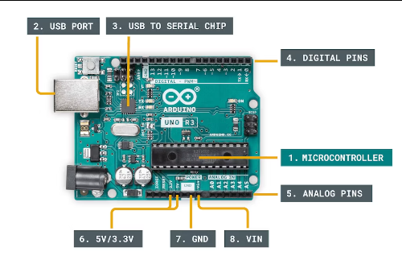

Inicio
La industria es un mundo en constante evolución, donde la tecnología es un elemento clave en la productividad y eficiencia de las empresas. Es esencial entender que el mantenimiento y la reparación de los equipos no solo alargan su vida útil, sino que también aseguran su correcto funcionamiento y minimizan los costos de reemplazo. No esperemos a que sea demasiado tarde para actuar, cuidemos nuestros equipos.
Últimos Avances en Tecnología
Algunos de los campos que estan experimentando avances significativos incluían la inteligencia artificial, tecnologías de energía renovable, medicina personalizada, computación cuántica, y redes 5G.
Reparaciónes
- Equipos eléctricos y electrónicos
- Sistemas de refrigeración
- Aires Acondicionados
- Tarjetas electrónicas
- Diseños eléctricos
- Diseños Electrónicos
- Levantamiento de planos
Mantenimientos
- Sistemas eléctricos
- Sistemas electrónicos
- Plantas eléctricas
- Acometidas eléctricas en baja y media tensión
Componentes
La Inteligencia Artificial (IA) es una herramienta esencial en el ámbito tecnológico actual. Gracias a esta tecnología, es posible desarrollar sistemas informáticos capaces de aprender, razonar y tomar decisiones de forma autónoma. Esto ha generado un gran impacto en diferentes sectores, como la medicina, la industria y los servicios. Además, su uso puede optimizar tareas y procesos, aumentando la eficiencia y reduciendo costos. En resumen, la IA se ha vuelto imprescindible en la actualidad, siendo clave en el desarrollo de la tecnología y en la mejora de nuestras vidas.
| Referencia | Descripción | Cantidad | Función |
|---|---|---|---|
| Semiconductor | transistor | 20 | propósito general |
| semiconductor | bobina | 10 | oscilación |
| semiconductor | condensador | 20 | acople capacitivo |